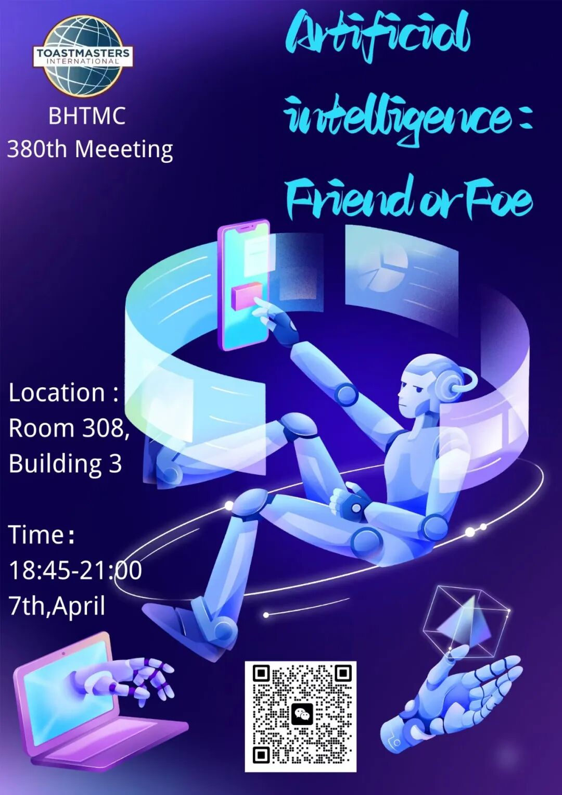
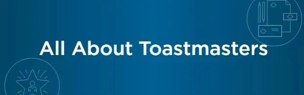

In the coming years,artificial intelligence is probably going to change your life,and likely the entire world.But people have a hard time agreeing on exactly how.There have been advancements in artifificial intelligence (AI) and deep learning in the past decade. Recently, OpenAI Inc. has launched a new chatbot, called ChatGPT that interacts in a conversational way and its dialogue format makes it user-friendly. It is universally acknowledged that the development of AI and the wide application of algorithm recommendation technology not only meets the information needs of network users, but also leads to the emergence of“Information Cocoon”.Information cocoon refers to the phenomenon that we hear only what we choose and only what comforts and pleases us.
In an era of Artificial Intelligence,Beihang Toastmasters will hold a technology-ridden meeting.Are you interested in this topic?See you this Friday .
🎆Theme:Artificial intelligence : Friend or Foe
🛰️Location :Room 308,building 3(3号楼308)北京航空航天大学学院路校区三号楼
⏰Date&Time:18:45-21:00,7th,april,2023(this Friday)
👨🏫Table Topic Master:George
